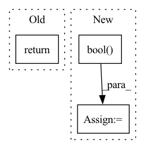

Pattern ID :38959
Before Change
p = torch.sigmoid(self.pred(F))
return p
After Change
E = self.E(q).permute(1, 0, 2)
P = self.P.unsqueeze(1)
causal_mask = torch.triu(
torch.ones([E.shape[0], M.shape[0]]), diagonal=1
).bool()
M += P
S, attn_weights = self.attn(E, M, M, attn_mask=causal_mask)In pattern: SUPERPATTERN
Frequency: 3
Non-data size: 3
Instances Fragment ID: 111104169
Project Name: hcnoh/knowledge-tracing-collection-pytorch
Commit Name: e8c848650ca10322eef657c510efd18826cf9a6c
Time: 2021-03-23
Author: rhc0624@gmail.com
File Name: models/sakt.py
M Class Name: SAKT
N Class Name: SAKT
M Method Name: forward(3)
N Method Name: forward(3)
M Parent Class: Module
N Parent Class: Module
M File Name: models/sakt.py
N File Name: models/sakt.py
M Start Line: 34
M End Line: 52
N Start Line: 39
N End Line: 62
Before Change
if g_i_g_j < 0:
g_i -= (g_i_g_j) * g_j / (g_j.norm()**2)
pc_grad = torch.stack(pc_grad).mean(dim=0)
return pc_grad
def _set_grad(self, grads):
idx = 0After Change
return
def _project_conflicting(self, grads, has_grads, shapes=None):
shared = torch.stack(has_grads).prod(0).bool()
pc_grad, num_task = copy.deepcopy(grads), len(grads)
for g_i in pc_grad:
random.shuffle(grads)
for g_j in grads: Fragment ID: 111104168
Project Name: weichengtseng/pytorch-pcgrad
Commit Name: 1e6e4e57d22cfc5d66f28af5149d98d5fce87533
Time: 2021-01-12
Author: ethanweichengtseng@gmail.com
File Name: pcgrad.py
M Class Name: PCGrad
N Class Name: PCGrad
M Method Name: _project_conflicting(4)
N Method Name: _project_conflicting(3)
M Parent Class:
N Parent Class:
M File Name: pcgrad.py
N File Name: pcgrad.py
M Start Line: 46
M End Line: 47
N Start Line: 48
N End Line: 62
Before Change
loss = loss**(q/2)
if distmat_mask is not None:
loss *= distmat_mask.float()
return loss.mean()
def rmsd_torch(X, Y):
Assumes x,y are both (B x D x N). See below for wrapper. After Change
if Y_mat is None:
Y_mat = torch.cdist(Y, Y, p=p)
if distmat_mask is None:
distmat_mask = torch.ones_like(Y_mat).bool()
// **2 ensures always positive. Later scale back to desired power
loss = ( X_mat - Y_mat )**2
if q != 2:
loss = loss**(q/2) Fragment ID: 111104166
Project Name: lucidrains/alphafold2
Commit Name: 74c364aa5ef21e7f06c3e720564ae00cbdf7f96d
Time: 2021-04-04
Author: ericalcaide1@gmail.com
File Name: alphafold2_pytorch/utils.py
M Class Name: AnonimousClass
N Class Name: AnonimousClass
M Method Name: distmat_loss_torch(7)
N Method Name: distmat_loss_torch(5)
M Parent Class:
N Parent Class:
M File Name: alphafold2_pytorch/utils.py
N File Name: alphafold2_pytorch/utils.py
M Start Line: 752
M End Line: 757
N Start Line: 741
N End Line: 765